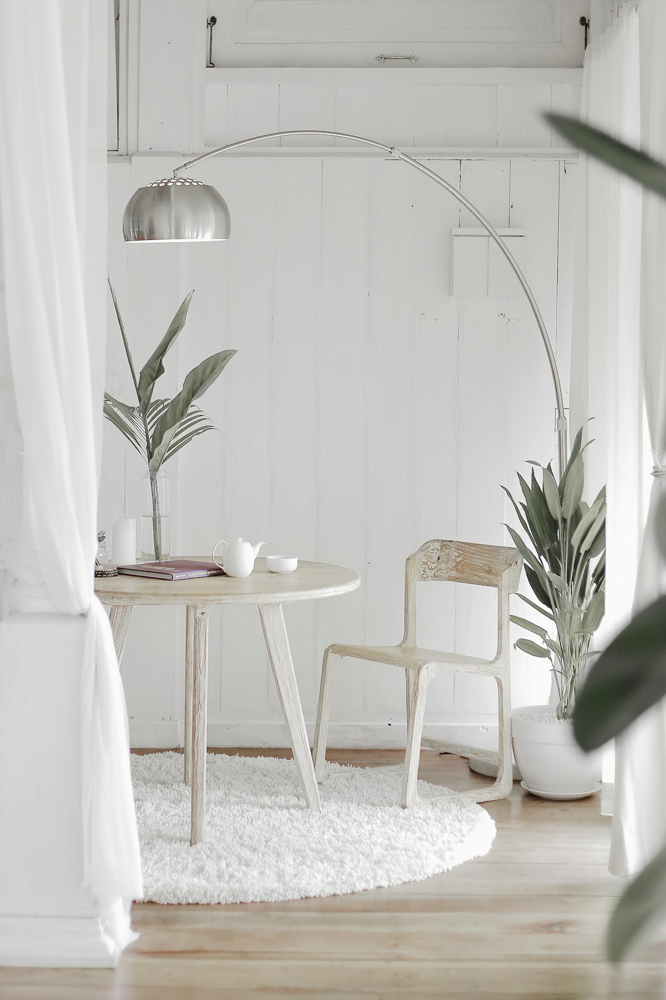

🔍

Good morning, Julian.
Take a breath.What's on your mind today?
Creative Work
• 2 hours ago
The Philosophy of Quiet Productivity
In a world that never stops shouting, there is a profound power in finding silence. This morning I'm reflecting on how we can build tools that don't demand attention, but rather reward it...
#mindfulness
#design-ethics
Ideas
📌
Morning Ritual Ideas
- Cold water therapy
- 5 minutes of focused breathing
- Tea ceremony without screens...

WorkOffice Redesign Notes
Need to prioritize ergonomic comfort and natural light diffusio...
Personal
Weekend Grocery List
- Fresh ginger & mint
- Organic honey
Work
Mar 12
Project Alpha Review
The feedback from the initial user group was surprisingly positive regarding the soft-focus UI...